Editor 문서의 배경 이미지를 설정하거나 삭제합니다.
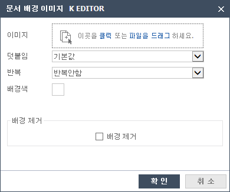
01드랍존을 클릭하거나 파일을 드래그하여 배경에 넣을 이미지를 선택할 수 있습니다.
02덧붙임 항목에서 스크롤의 유무를 설정할 수 있습니다.
03반복 항목에서 배경이미지의 가로, 세로, 가로세로의 반복을 설정할 수 있습니다.
04배경색을 클릭하여 다양한 배경색을 설정할 수 있습니다.
05배경 제거 버튼은 배경이미지가 설정되어 있을 때 나타납니다.
배경 제거 부분을 체크하고 확인 버튼을 클릭하면 설정되었던 배경이미지와 색이 모두 제거 됩니다.
외부URL 링크 이미지 또는 사용자 이미지를 추가합니다.
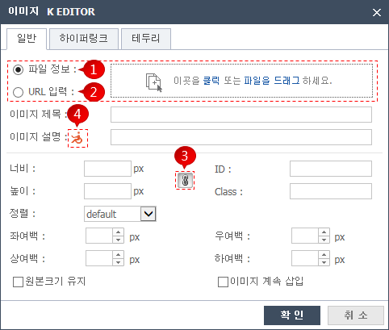
01드랍존을 클릭하거나 파일을 드래그하여 삽입할 이미지를 선택할 수 있습니다.
(이 경우 ②번 영역은 비활성화 됩니다.)
02URL주소로 이미지를 선택할 수 있습니다. (이 경우 ①번 영역은 비활성화 됩니다.)
03기타 필요한 이미지 속성값을 입력 후 확인을 누르면 이미지가 삽입됩니다.
04③번 버튼은 이미지를 수정할 때 나타납니다.
클릭하여 활성화 시키면 이미지의 가로, 세로 비율이 유지되고, 비활성화 시키면 비율을 유지하지 않습니다.
05④번 이미지를 클릭하면 이미지를 삽입할 때 준수해야할 웹접근성에 대한 설명이 나옵니다.
내용을 보고 웹접근성에 위배되지 않도록 이미지 설명을 입력하시면 됩니다.
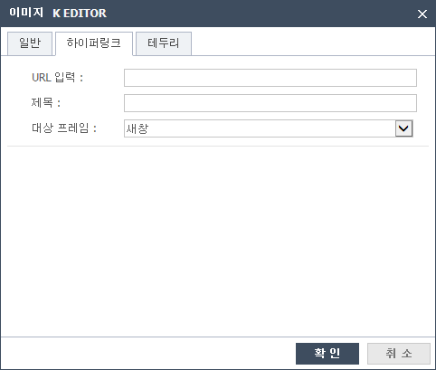
06이미지에 링크를 걸어줄 경우 URL 및 기타 속성을 입력 후 확인을 클릭합니다. (필수 입력: URL)
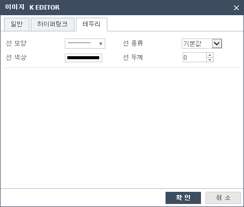
07선 모양, 종류, 색상, 두께를 선택하여 이미지에 다양한 테두리를 적용할 수 있습니다.
외부 동영상을 공유합니다.
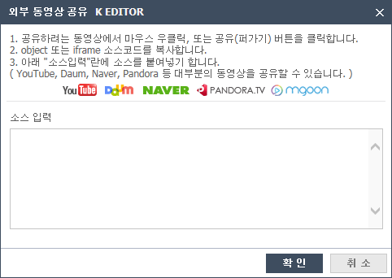
01소스 입력칸에 동영상의 소스코드를 붙여넣기 합니다.
02확인을 누르면 에디터에 외부 동영상이 삽입됩니다.
03YouTube, Daum, Naver, Pandora, Mgoon 동영상을 공유할 수 있습니다.
Iframe을 삽입합니다.
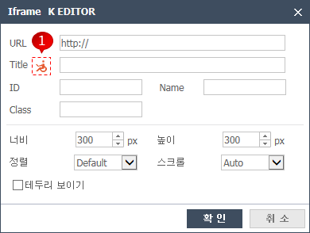
01①번 이미지를 클릭하면 iframe을 만들때 지켜야할 웹접근성 내용이 나타납니다.
내용을 보고 웹접근성에 위배되지 않게 title을 입력합니다
02필요한 다른 속성값을 입력 후 확인을 누르면 iframe이 삽입됩니다.
Flash를 삽입합니다.
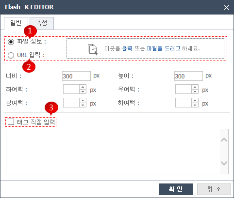
01드랍존을 클릭하거나 파일을 드래그하여 사용자의 flash파일을 추가합니다.
(이 경우 ②번 영역은 비활성화 됩니다.)
02URL을 입력하여 외부의 flash파일을 삽입할 수 있습니다.
(이 경우 ①번 영역은 비활성화 됩니다.)
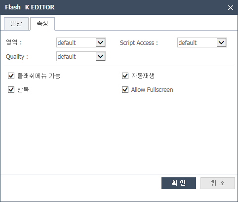
03기타 필요한 속성값을 입력해주고 확인 버튼을 클릭하면 flash가 삽입됩니다.
04③번 영역의 태그 직접 입력을 선택하면 팝업창의 속성값들은 모두 무시되고,
사용자가 직접 입력한 flash태그가 삽입됩니다.
동영상을 삽입합니다.
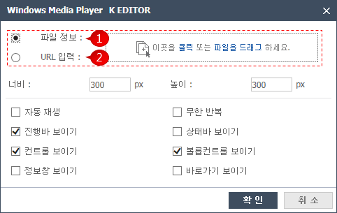
01드랍존을 클릭하거나 파일을 드래그하여 사용자의 동영상파일을 추가합니다.
(이 경우 ②번 영역은 비활성화 됩니다.)
02URL을 입력하여 외부의 동영상파일을 삽입할 수 있습니다.
(이 경우 ①번 영역은 비활성화 됩니다.)
03기타 필요한 속성값을 입력해주고 확인 버튼을 클릭하면 동영상이 삽입됩니다.
파일을 삽입합니다.
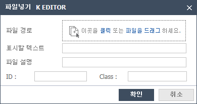
01드랍존을 클릭하거나 파일을 드래그하여 사용자의 파일을 추가합니다.
(파일을 넣으면 표시할 텍스트에 파일명이 나타납니다.)
02필요 시 파일 설명을 입력합니다.
(삽입된 내용에 마우스를 올려놓으면 파일설명이 보입니다.)
03파일에ID와 Class 값을 추가합니다.
hyperlink를 생성하여 사용자가 웹페이지 이동을 쉽게 할 수 있도록 도와줍니다.
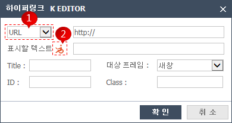
01①번 선택박스를 클릭하여 URL과 책갈피, 이미지 중 링크할 대상을 선택합니다.
02②번 이미지를 클릭하면 하이퍼링크에 대한 웹 접근성 내용이 나타납니다.
내용을 보고 웹 접근성에 위배되지 않게 표시할 텍스트를 작성합니다.
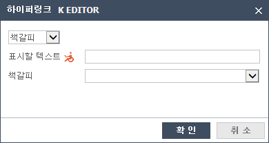
03①번에서 책갈피를 선택한 경우 에디터에서 만든 책갈피들이 책갈피 이름 선택박스에
나타나게 되고 그 중 하나를 선택하면 됩니다.
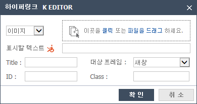
04①번에서 이미지를 선택한 경우 드랍존을 클릭하거나 파일을 드래그하여
링크할 대상을 선택합니다.
Editor에 책갈피를 삽입합니다.
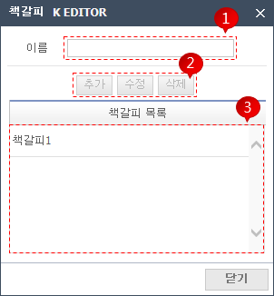
01③번 영역에 그동안 삽입한 책갈피 목록이 나타납니다.
02①번에 새로 추가할 책갈피 이름을 작성 후 ②번의 추가 버튼을 클릭하면 책갈피가 추가됩니다.
03③번 영역에 추가되어 있는 책갈피들 중 하나를 선택하면,
②번의 수정, 삭제 버튼이 활성화되어 수정, 삭제를 할 수 있습니다.
Editor에 수평선을 삽입합니다.
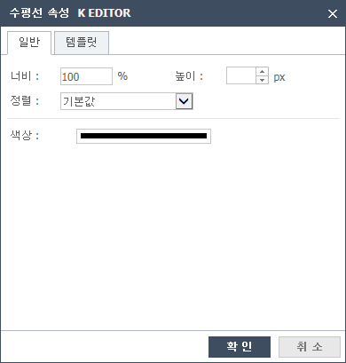
01팝업창의 속성들을 작성 후 확인을 클릭하면 수평선이 삽입됩니다.
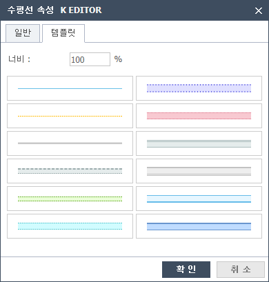
02팝업 상단의 템플릿을 클릭하면 여러가지 수평선 템플릿 중 하나를 선택할 수 있습니다.
Editor에 특수문자를 삽입합니다.
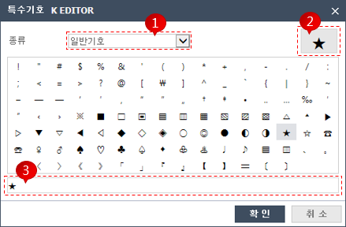
01①번 선택박스로 특수문자의 종류를 선택합니다.
02특수문자에 마우스를 가져가면 해당문자가 ②번 영역에 크게 보입니다.
03특수문자를 클릭하면 ③번영역에 문자가 추가되고 확인 버튼을 클릭하면 Editor에 삽입됩니다.
Editor에 이모티콘을 삽입합니다.
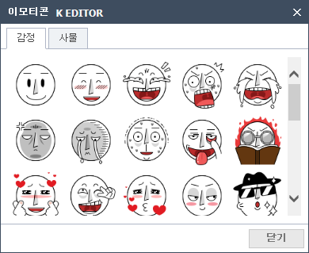
01팝업창의 이모티콘을 클릭하면 Editor에 클릭한 이모티콘이 삽입됩니다.